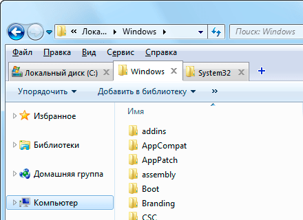

QTTabBar
Поделиться:
Программа QTTabBar поможет расширить возможности стандартного проводника Windows. Вы сможете открывать вкладки внутри одного диалогового окна, пользоваться горячими клавишами и восстанавливать несколько закрытых вкладок.Это приложение действительно полезно, работа в Проводнике становится подобна работе в браузере, когда новая страница открывается во вкладке, а не отдельном окне.Кроме того, утилита позволяет запоминать открытые вкладки,дает возможность предпросмотра содержимого текстовых и графических файлов.

Возможности QTTabBar :
- Содержит собственное контекстное меню (ПКМ);
- Позволяет добавить фильтр при поиске конкретного файла;
- Опция предпросмотра содержимого при наведении курсора на папку.
- Расширение, упрощающее навигацию по системе Microsoft;
- Программу можно включить или отключить одной кнопкой;
- Улучшение функционала штатного файлового менеджера;
- Автоматически проверяет доступные обновления;
Операционные системы:
- Windows 7, 8.1, 10 (32/64-bit)